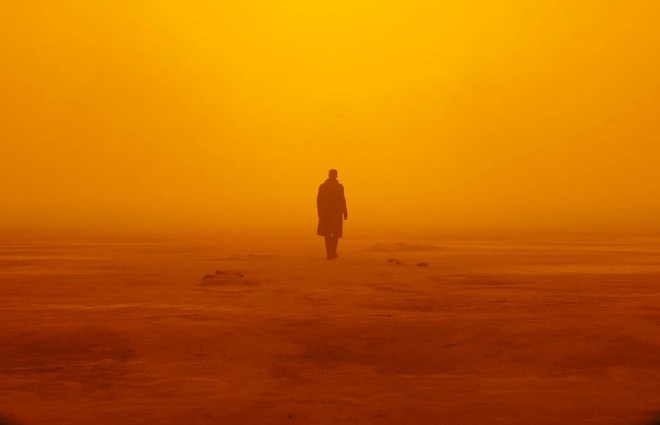
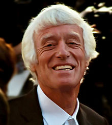

'Walking into the abyss' is one of the masterfully crafted shots by Cinematographer Roger Deakins and director Denis Villenueve. Blade Runner 2049 is a must watch for visual storytelling fans.

Some great Cinematographers

Roger Deakins
Hoyt Van Hoytema
Robert Richardson
Greig Fraser
A lot of cinematography is intuition. It's an art, not a formula.
-Reed Morano
Call to action! It's time!
Sign up to stay in touch with us. Click that button right over there!